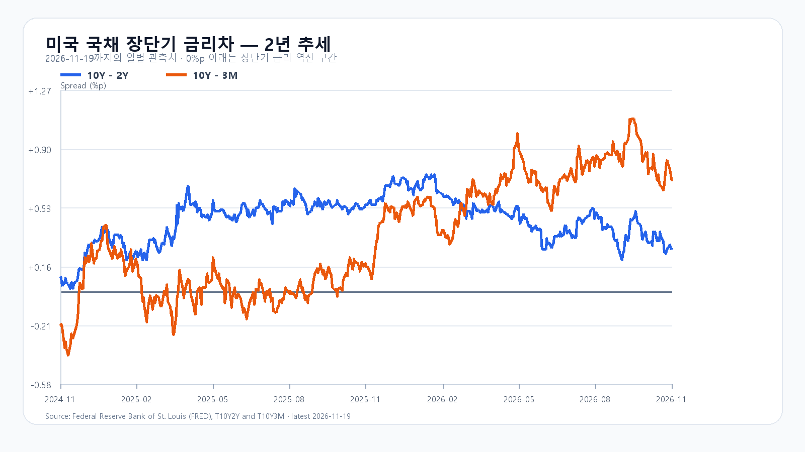
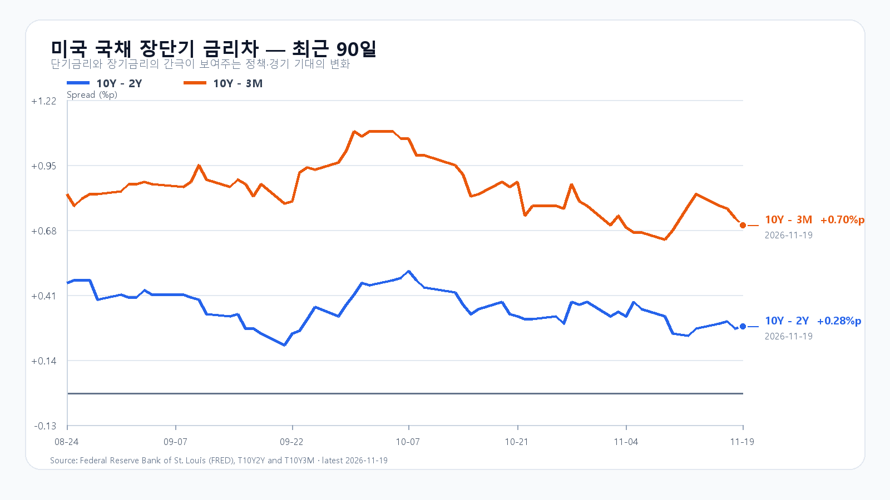

상장 열기가 반도체 매도를 막지 못했다
19일 미국 정규장에서 AMD는 7.72%, Nvidia는 3.30%, Micron은 2.10%, Broadcom은 2.09% 하락했습니다. 반도체 ETF인 SOXX와 SMH도 각각 2.75%, 2.62% 내렸습니다. 전날 종목별로 엇갈렸던 흐름이 동반 하락으로 바뀌어, 오늘 국내 반도체주에도 매도 압력이 커질 수 있습니다. 미국 종가
Anthropic은 주당 83달러에 9억8천만 주를 공모하고 19일 나스닥 거래를 시작하도록 일정을 잡았습니다. 총공모액은 구주매출을 포함해 813억4천만 달러입니다. 새 AI 기업을 향한 자금 수요가 크더라도 기존 장비·반도체 기업의 주가까지 함께 오르는 것은 아닙니다. 상장과 같은 날 나타난 하락만으로 자금 이동이 매도의 원인이라고 단정할 수도 없습니다. 회사 발표
AMD 의혹은 확정된 제재와 구분해야 한다
Hunterbrook은 AMD에 대한 공매도 포지션을 공개하면서 중국 관련 거래와 수출규제 위험을 제기했습니다. AMD는 해당 주장이 사업 관행과 관계를 잘못 묘사한다며 미국 수출통제 법규를 준수한다고 반박했습니다. 의혹 제기와 회사 반론이 맞서는 단계이며 법 위반이 확정된 사건으로 볼 수 없습니다. Reuters · AMD 반론
한국 메모리 업체에 전해지는 당장의 위험은 AI 투자 수요의 소멸보다 반도체주 전반의 위험 회피입니다. 규제 불안이 고객의 주문과 실제 출하를 줄이는지, 주식시장의 매도에 머무는지는 나눠 봐야 합니다. Nvidia의 앞선 실적과 경영진 변화는 이미 지난 한국장에 반영된 재료이고, 오늘 새 부담은 이후 미국 정규장의 추가 하락입니다.
코스피 5,000선에서 매수의 지속을 본다
19일 코스피는 5,090.04에 출발해 4,963.61까지 밀렸다가 당일 고가인 5,137.89로 1.39% 상승 마감했습니다. KODEX 레버리지도 55,265원에 출발해 52,170원까지 하락한 뒤 고가인 56,035원으로 3.01% 올랐습니다. 두 거래일 연속 반등했지만 미국 반도체 매도가 오늘도 그 회복을 시험합니다. 국내 일봉
기본 종가 범위는 4,950~5,150, 확률은 45%입니다. 외국인 현물이 순매도로 기울지 않는 경우를 가정합니다. 5,150 초과와 외국인·프로그램 동반 순매수가 겹치면 강세 5,150 초과~5,350(15%), 4,950 미만과 두 수급의 동반 순매도가 겹치면 약세 4,700~4,950 미만(40%)을 둡니다. 경계값은 기본 범위에 배정하고, 범위 이탈이나 수급 반전은 각 가정을 무효화합니다. 장중 저가·고가의 예상 포락은 별도로 4,550~5,450입니다.
대응 점수는 공격 10·관망 40·방어 50입니다. KODEX의 1차 지지는 전일 저가 52,170원, 반등 기준은 전일 시가 55,265원, 저항은 전일 고가이자 종가인 56,035원입니다. 갭 하락 뒤 55,265원 회복과 외국인·프로그램 매수가 함께 나타나야 반등의 지속을 기대할 수 있습니다. 52,170원 이탈과 동반 매도에는 방어 비중을 높일 조건이 됩니다.
메모리 현물과 주가는 다른 속도로 움직인다
TrendForce의 19일 18:10 대만시간 현물 표에서 DDR5 16Gb 평균은 60.667달러로 0.28% 상승했고 DDR4 16Gb는 78.75달러로 0.25% 하락했습니다. 품목별 가격 차별화가 이어지는 가운데 미국 메모리 주식은 하락했습니다. 현물가격의 소폭 상승만으로 주식 매도를 상쇄하기는 어렵습니다. DRAM 현물
NAND 512Gb TLC 웨이퍼 현물은 9일 관측 기준 14.267달러로 11.67% 하락했습니다. 관측일과 제품이 다른 이 가격을 오늘 HBM이나 기업용 SSD의 계약가격 변화로 옮겨 읽어서는 안 됩니다. 삼성전자·SK하이닉스의 이익을 판단하려면 고부가 제품의 출하와 수익성, 주가를 판단하려면 외국인 현물과 선물 수급을 각각 봐야 합니다. NAND 현물
AI 투자에는 자금 비용도 따른다
Jefferson 연준 부의장은 19일 연설에서 AI 설비투자가 현재 수요와 물가를 밀어 올리는 한편 미래 생산성 향상은 물가를 낮출 수 있다고 설명했습니다. 투자 지출과 생산성 효과가 나타나는 시점이 다르다는 뜻입니다. 수요 증가만으로 금리 부담이 빠르게 낮아질 것으로 기대하기는 어렵습니다. 연준 연설
FRED의 19일 관측에서 10년-2년 금리차는 0.28%포인트, 10년-3개월은 0.70%포인트입니다. 개별 금리는 18일 기준 10년 5.07%, 2년 4.80%, 3개월 4.34%입니다. 서로 다른 관측일의 값을 같은 날 금리곡선으로 합치지 않아야 합니다. 높은 장기금리는 AI 기업의 자금 비용과 주식 가치평가에 부담으로 남습니다. 10년-2년 · 10년-3개월
09:30에는 외국인 현물·선물과 프로그램 매도 규모, 10:30에는 삼성전자·SK하이닉스의 저점 유지, 14:00 이후에는 매수 전환이 이어지는지 살핍니다. 시나리오 조건 관측 시한은 15:20입니다. 미국 BLS는 20일 10:00 ET, 한국시간 21일 00:00에 주별 고용·실업 통계를 발표할 예정입니다. 공식 일정
유가 반등과 원화 약세도 부담이다
20일 06:59:57 KST WTI 선물은 배럴당 83.16달러로 0.87%, 06:57:04 KST Brent 선물은 90.05달러로 0.99% 상승했습니다. 같은 날 07:20:12 KST 하나은행 달러/원 고시는 1,335.50원으로 전회보다 1.50원 높았습니다. 은행 고시와 서울 현물환 체결가는 구분해야 합니다. 유가와 환율이 함께 오르면 국내 기업의 비용과 외국인 수급에 부담을 더할 수 있습니다. WTI · Brent · 달러/원
발행 기준 시세
| 항목 | 값 | 원천 기준 시각 |
|---|---|---|
| KOSPI 전일 종가 | 5137.89 | 2026-11-19T15:30:00+09:00 |
| KODEX 전일 종가 | 56,035원 | 2026-11-19T15:30:00+09:00 |
| USD/KRW 하나은행 고시 | 1,335.50원 | 2026-11-20T07:20:12+09:00 |
| NQF 최근 거래 | 26,505.50 | 2026-11-20T06:59:59+09:00 |
| ESF 최근 거래 | 7,182.50 | 2026-11-20T06:59:59+09:00 |
| BZF 최근 거래 | 90.05 | 2026-11-20T06:57:04+09:00 |
| CLF 최근 거래 | 83.16 | 2026-11-20T06:59:57+09:00 |
미국 11월 19일 정규장 종가
| 종목 | 종가 USD | 등락 | 시각 ET |
|---|---|---|---|
| QQQ | 645.04 | -2.19% | 2026-11-19T16:00:00-05:00 |
| TQQQ | 49.01 | -6.54% | 2026-11-19T16:00:00-05:00 |
| SOXX | 137.95 | -2.75% | 2026-11-19T16:00:00-05:00 |
| SMH | 447.48 | -2.62% | 2026-11-19T16:00:00-05:00 |
| NVDA | 145.98 | -3.30% | 2026-11-19T16:00:00-05:00 |
| AMD | 489.19 | -7.72% | 2026-11-19T16:00:00-05:00 |
| MU | 690.44 | -2.10% | 2026-11-19T16:00:00-05:00 |
| AVGO | 346.65 | -2.09% | 2026-11-19T16:00:00-05:00 |
미국 시간외는 20일 07:57~07:59 KST 마지막 관측에서 Nvidia 146.0847달러, AMD 479.5617달러, Micron 685.80달러, Broadcom 347.1542달러입니다. 시간외 거래 종료 전 표본이며 정규장 종가와 구분합니다. 시간외 시세

